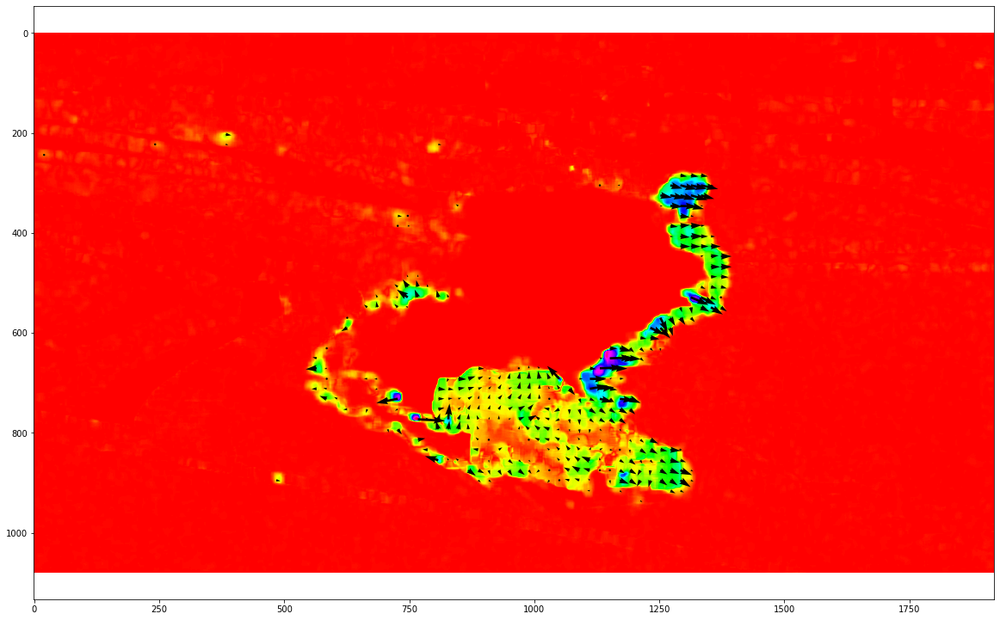

Optical Flow
Welcome, it's great to have you here. Want to hear more about optical flow and how it can be coded on Python
Video by Abed Ismail from Pexels.
Optical flow is the pattern of apparent motion of image objects between two sequential frames (images) arised from the movement of object or camera. It is 2D vector field where each vector is a displacement vector implying the movement of points from first frame to second.
OpenCV provides algorithm to find the dense optical flow. It computes the optical flow for all the points in the frame. It is based on Gunnar Farneback's algorithm which is explained in "Two-Frame Motion Estimation Based on Polynomial Expansion" by Gunnar Farneback in 2003.
For OpenCV’s implementation, the magnitude and direction of optical flow from a 2-D channel array of flow vectors are computed for the optical flow problem. The angle (direction) of flow by hue is visualized and the distance (magnitude) of flow by the value of HSV color representation. The strength of HSV is always set to a maximum of 255 for optimal visibility. The method defined is caclopticalFlowFarneback()[ref: https://www.geeksforgeeks.org/].
Optical Flow results.
I also used optical flow method for two sequential sea surface temperature satellite images to extract sea surface motion. For this application, we assume that surface temperature is approximately robust and if significant changes are seen in temperature at same location and different times, the main cause would be sea surface currents. This figure shows one of my results using optical flow over two MODIS satellite images.

Optical Flow results over two sequential sea surface temperature satellite images.
For details, please watch my YouTube .